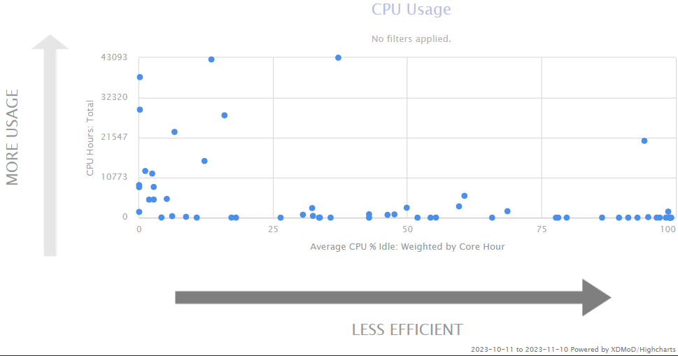
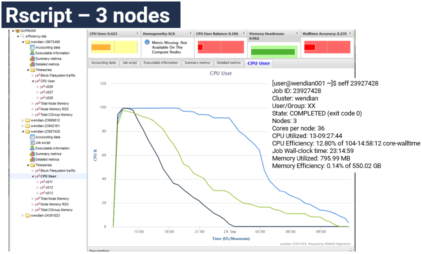
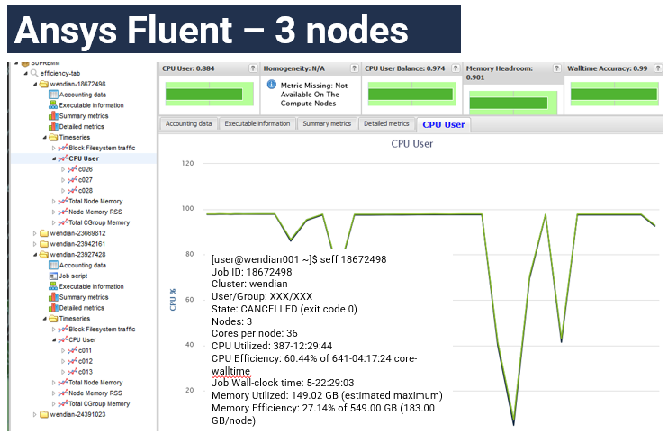

Knowing your job efficiency
XDMoD.mines.edu
Management capabilities
Monitoring standard metrics: utilization
Metrics designed to identify underperforming systems hardware and software
Reporting job level performance data for every job running on the HPC
A tool to effectively and efficiently use an allocations and optimize HPC resources
Ability to monitor, diagnose, and tune system performance and measure the performance of all applications running
Easily obtain detailed analysis of application performance to aid in optimizing code performance
A diagnostic tool to facilitate HPC planning and analysis
Metrics to help measure scientific impact.
Analyses of the operational characteristics of the HPC environment can be carried out at different levels of granularity
job, user, or on a system-wide basis.
Using the Efficiency Tab

SLURM command ‘seff’
Using the SLURM build-in command seff $JOBID
Job ID: xxxxxxx
Arrage Job ID: xxxxxx_0
Cluster: wendian
User/Group: username/usergroup
State: COMPLETE (exit code 0)
Nodes: 2
Cores per node: 4
CPU Utilized: 00:05:51
CPU Efficiency: 23.21% of 00:25:12 core-walltime
Job Wall-clock time: 00:03:09
Memory Utilized: 973.22 MB (estimated maximum)
Memory Efficiency: 6.76% of 14.06 GB (1.76 GB/core)
Selecting Job ID in XDMoD.mines.edu
Output detailed information on accounting data, job script, executable, and metrics
Example of Rscript using 3-nodes

A 3-node job where all nodes have work for the first three hours, then each node runs out of work and because an unbalance workload across the 3-node job. The total CPU Efficiency is reported at 12.8%. The Rscript program running should be examined to improve this load inbalance.
Example of Ansys Fluent (interactively running)

This jobs using 5-days of compute wall-time a utilization efficiency of 60.44% is report. The user was probably accessing the interface and adjusting settings during the few drops seen in the graph.